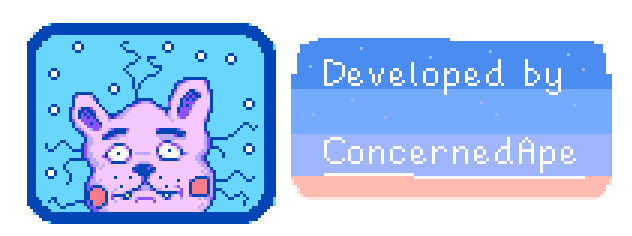

O samym Stardew Valley
To niekończące się RPG o życiu na farmie. Odziedziczyłeś kawałek ziemi po swoim zmarłym dziadku w krainie Stardew Valley.
Wyposażony w niezbędne narzędzia i niepełny portfel, rozpoczynasz całkowicie nowe życie. Dasz radę utrzymać się z darów natury i zamienić tę zarośniętą dzicz w swój dom? To nie będzie łatwe.
Odkąd Joja Corporation przybyło do miasteczka, dawne zasady życia zaniknęły. Ośrodek kultury, niegdyś centrum zainteresowania i najbardziej żywe miejsce w miasteczku teraz zmieniło się w ruinę. Ale dolina jest pełna wyjątkowych okazji i zajęć.
Przy odrobinie wysiłku możesz przywrócić Stardew Valley jego dawną świetność!
Twórca Stardew Valley
Eric Barone po ukończeniu studiów informatycznych, nie mogąc znaleźć pracy, samotnie rozpoczął projekt. Jako fan serii Harvest Moon postanowił stworzyć grę komputerową w założeniach podobną do niej.
Prace nad projektem trwały cztery lata, w ciągu których nad grą spędzał średnio 10 godzin dziennie. Gra ze wszystkimi jej elementami (grafika, muzyka) zostały w całości przez niego stworzone.
Eric w tym czasie był utrzymywany przez swoją dziewczynę, czasami dorabiał jako pomocnik w teatrze. Po ukończeniu gry została ona wydana przez Chucklefish.

Do czego taka strona?
Byłem zainteresowany Stardew Valley, już od dłuższego czasu, lecz gdy zacząłem grać razem ze
znajomym wciągnąłem się ponownie. Ta strona jest przeznaczona na pomysły związane z grą
oraz, aby śledzić progres swojej gry. Nie znajdziesz na niej obiektywnych opinii, lecz bardziej
moje własne doświadczenie z grą. Jeśli chcesz się więcej dowiedzieć na temat gry polecam zajrzeć na stronę Wiki gry:
Link do strony Wiki gry